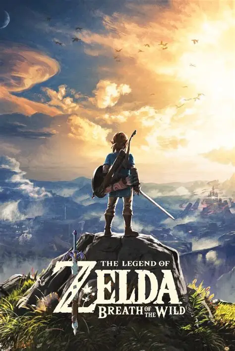
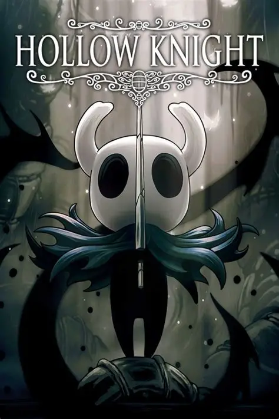
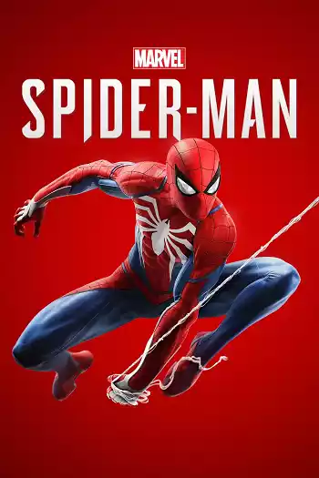

Bem-vindos ao PlayPortal!
Sobre o PlayPortal: O PlayPortal é um projeto de demonstração feito para mostrar, na prática, os principais conceitos do desenvolvimento web — tudo isso dentro do universo dos videogames. Pense nele como uma estante digital pessoal: um jeito fácil e visual de explorar jogos, conhecer seus detalhes e descobrir novos gêneros para se aventurar.
No PlayPortal, você encontra:
- 🎮 Catálogo de jogos:Uma seleção organizada com diversos títulos, recomendações e informações detalhadas. Tudo para você explorar à vontade e descobrir novos jogos que combinam com o seu estilo.
- ⭐ Avaliações e características: Quer saber se um jogo é a sua cara? A gente te ajuda com detalhes como gênero, plataforma, estilo de gameplay e os pontos fortes de cada título — tudo para facilitar sua escolha.
- 🚀 Atualizações constantes: O PlayPortal está sempre evoluindo! Novas sugestões e conteúdos entram o tempo todo para manter você por dentro das novidades e tendências do universo gamer.
Destaques


